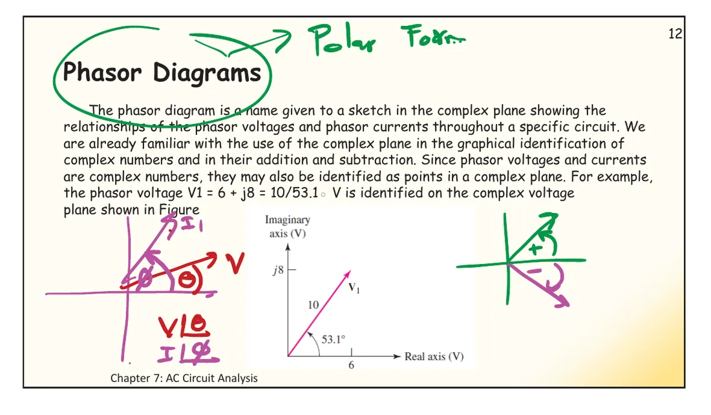

Slide p. 9 defines a phasor diagram as a sketch in the complex plane showing the relationships of the phasor voltages and phasor currents throughout a circuit, for example \(\mathbf{V}_1 = 6 + j8 = 10\angle 53.1^\circ\) V. Since phasors are complex numbers, adding is placing arrows head to tail, and multiplying by an impedance or admittance stretches and turns an arrow. The main uses: seeing at once which quantity leads, and checking Kirchhoff's laws by eye: the arrows around a loop must close. This page has two simulations (A, B) and two textbook problems that build a diagram one step at a time.
ดูสไลด์แผนภาพเฟเซอร์ที่ผู้สอนเขียนในห้อง (สไลด์ปี 2561)See the phasor-diagram slide as written in class (2018 slides)

ในห้องเขียนเฟเซอร์ในรูปเชิงขั้ว \(V\angle\theta\), \(I\angle\phi\) และทิศของมุม: ทวนเข็มนาฬิกาเป็นบวก ตามเข็มนาฬิกาเป็นลบIn class the phasors were written in polar form, \(V\angle\theta\) and \(I\angle\phi\), with the sense of the angle: anticlockwise positive, clockwise negative
A phasor diagram puts all the phasors of a circuit on one plane. Voltages and currents use different length scales but share the angle scale, so you read at once which one leads.
Kirchhoff's voltage law (KVL) around a loop: the voltage phasors, head to tail, come back to the start · KCL at a node: the current phasors close too.
Pick a convenient reference: a series circuit uses the common current \(\mathbf{I} = I_m\angle 0^\circ\), a parallel circuit the common voltage \(\mathbf{V} = V_m\angle 0^\circ\).
If the real source differs from the one assumed, scale and rotate the whole picture; the angles between phasors do not change (Hayt Fig. 10.41).
Only phasors of one frequency belong on one diagram (different frequencies turn at different speeds; see page 7.2).
Left: \(\mathbf{V}_1 = 6 + j8\) V plus \(\mathbf{V}_2 = 3 - j4\) V; the arrow \(\mathbf{V}_2\) starts at the tip of \(\mathbf{V}_1\), and the sum runs from the start to the final tip. Right: the current \(\mathbf{I}_1 = Y\mathbf{V}_1\) through an admittance \(Y = 1 + j1\) S, which is \(\sqrt2\angle 45^\circ\), so it stretches the arrow by \(\sqrt2\) and turns it by 45°: the current leads the voltage by 45° (the current length uses its own scale).
Draw the phasor diagram of the parallel circuit and find by how much \(\mathbf{I}_s\) leads \(\mathbf{I}_R\), \(\mathbf{I}_C\) and \(\mathbf{I}_x\)
Hayt Example 10.13 (แอดมิตแตนซ์ j0.3 S, −j0.1 S, 0.2 S ขนานกัน \(\mathbf{I}_x = \mathbf{I}_L + \mathbf{I}_R\))
Hayt Example 10.13 (admittances j0.3 S, −j0.1 S and 0.2 S in parallel; \(\mathbf{I}_x = \mathbf{I}_L + \mathbf{I}_R\))
วงจรขนานมีแรงดันร่วมตัวเดียว จึงสมมติ \(\mathbf{V} = 1\angle 0^\circ\) V เป็นตัวอ้างอิงก่อน แต่ละขั้นวาดลูกศรเพิ่มทีละตัวตามลำดับในตำรา ขั้นสุดท้ายเปลี่ยนเป็นแหล่งจ่ายจริง 1∠0° A แล้วดูว่าทั้งภาพหมุนและย่อขยายพร้อมกัน
A parallel circuit has one common voltage, so \(\mathbf{V} = 1\angle 0^\circ\) V is assumed as the reference first. Each step adds one arrow in the book's order; the last step switches to the true 1∠0° A source and the whole picture turns and rescales together.
A series circuit has a single common current, so \(\mathbf{I} = 1\angle 0^\circ\) A is the reference (the yellow arrow on the real axis). \(\mathbf{V}_R\) points along \(\mathbf{I}\), \(\mathbf{V}_L\) up by 90°, \(\mathbf{V}_C\) down by 90°, and head to tail they give \(\mathbf{V}_s\). With \(X_L = X_C\) the arrows \(\mathbf{V}_L\) and \(\mathbf{V}_C\) cancel exactly: the source voltage equals the resistor voltage, although \(|\mathbf{V}_L|\) is as large as 50 V (Hayt calls this resonance). Slide \(X_L\), \(R\), \(X_C\), or switch the reference to \(\mathbf{V}_s\).
Hayt Practice 10.17: \(V_s\) feeds a node through 2 Ω (voltage \(V_1\)); from that node j2 Ω (voltage \(V_2\)) and −j1 Ω in series with 2 Ω (voltage \(V_R\)) go to ground
ไม่ต้องรู้ค่าแหล่งจ่าย: ให้กระแสในกิ่งขวาสุด \(\mathbf{I}_C = 1\angle 0^\circ\) A เป็นตัวอ้างอิง แล้วสร้างแผนภาพย้อนกลับไปหาแหล่งจ่ายทีละขั้น อัตราส่วนที่ได้ใช้ได้กับแหล่งจ่ายทุกค่า
The source value is not needed: take the current in the rightmost branch, \(\mathbf{I}_C = 1\angle 0^\circ\) A, as the reference and build the diagram back towards the source one step at a time. The ratio holds for any source value.
ลองทำดู 1 — ต่อหัวต่อหาง
ส่วน A ปรับ \(\mathbf{V}_2\) ให้ชี้ทางเดียวกับ \(\mathbf{V}_1\) (มุม 53.1°): ขนาดผลรวมเท่ากับผลบวกของขนาด กรณีนี้กรณีเดียว
สไลด์บทที่ 7 หน้า 9 · สไลด์ปี 2561 หน้า 12 · Hayt §10.8 (รูป 10.37–10.41, Example 10.13, Practice 10.17)
Try this 1 — head to tail
In section A point \(\mathbf{V}_2\) the same way as \(\mathbf{V}_1\) (angle 53.1°): the size of the sum equals the sum of the sizes, in this case only.
Point it the opposite way (angle −126.9°): the sum is shortest.
Change \(Y\) to \(1 - j1\) S: the current now lags the voltage by 45° (an inductive admittance).
Try this 2 — resonance
In section B the default \(X_L = X_C = 50\ \Omega\): \(\mathbf{V}_s = \mathbf{V}_R = 10\angle 0^\circ\) V, yet \(|\mathbf{V}_L| = |\mathbf{V}_C| = 50\) V, five times the source.
Look at the graph: \(v_L\) and \(v_C\) are exactly in opposite phase and add to zero at every instant.
Raise \(X_L\) to 80 Ω: \(\mathbf{V}_s\) leads \(\mathbf{I}\) (an inductive circuit); lower it to 20 Ω: \(\mathbf{V}_s\) lags.
Try this 3 — scale and rotate
The last step of problem 1: the true voltage is \(\mathbf{V} = 1/(0.2 + j0.2) = 3.536\angle{-45^\circ}\) V; every arrow turns by −45° and grows 3.54 times, and the angles between them stay the same.
Problem 2: the ratio 1.897 comes out without knowing \(V_s\) at all.
Question: why is it easier to assume \(\mathbf{V} = 1\angle 0^\circ\) first than to start from the true source?
Chapter 7 slides, p. 9 · 2018 slides, p. 12 · Hayt §10.8 (Figs. 10.37–10.41, Example 10.13, Practice 10.17)